Práctica 4: Autovectores y Autovalores
-
- Sea T ∈
 (K2, K2) definida por T(u,v) = (v,u) para u,v ∈ K.Calular los autovalores y sus autovectores
asociados para T.
(K2, K2) definida por T(u,v) = (v,u) para u,v ∈ K.Calular los autovalores y sus autovectores
asociados para T.
- Sea T ∈(K3, K3) definida por T(u,v,w) = (2u,0,5w) para u,v,w ∈ K.Calcular los autovalores y sus
autovectores asociados para T.
- Para n ∈ ℕ sea T ∈(Kn, Kn) definida por
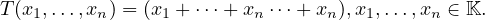
Calular los autovalores y sus autovectores asociados para T.
Recordatorio:Ax = T(x,y) = A![[ ]
x
y](TODO1x.png) .T(e1) = A(e1)
.T(e1) = A(e1)
Soluciones
- A = 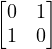.B = A - λI = 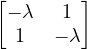.|B| = λ2 - 1 = (λ - 1)(λ + 1) = 0⇐⇒λ = 1 ∨ λ = -1.
- λ = 1 :B = 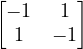.B
 = 0⇐⇒x ∈⟨{1,1}⟩.Ya que 1 ⋅
= 0⇐⇒x ∈⟨{1,1}⟩.Ya que 1 ⋅ + 1⋅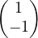 = .
+ 1⋅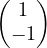 = .
- λ = -1 : B =
![[ ]
1 1
1 1](TODO9x.png) .Bx = 0⇐⇒x ∈⟨{1,-1}⟩.
.Bx = 0⇐⇒x ∈⟨{1,-1}⟩.
- A =
 .B = A-λI = 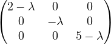.|B| = (2 -λ)(-λ)(5 -λ) = 0⇐⇒λ = 2 ∨λ = 0 ∨λ = 5.
.B = A-λI = 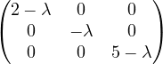.|B| = (2 -λ)(-λ)(5 -λ) = 0⇐⇒λ = 2 ∨λ = 0 ∨λ = 5.
- λ = 2 : B = 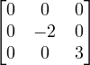.B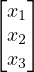 = 0⇐⇒x ∈⟨{1,0,0}⟩.
- λ = 0 : B = 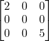.B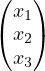 = 0⇐⇒x ∈⟨{0,1,0}⟩.
- λ = 5 : B = 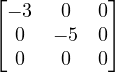.B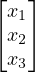 = 0⇐⇒x ∈⟨{0,0,1}⟩.
- Encontrar los autovalores y autovectores asociados para los operadores lineales sobre K2dados por las siguientes
matrices.
- A = 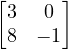 .
- B = 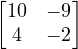 .
- C =
![[1 0]
0 1](TODO20x.png) .
.
- D =
![[ ]
0 0
0 0](TODO21x.png) .
.
Soluciones:
- Encontrar el autoespacio correspondiente de cada autovalor
- A =
![[ 4 - 2]
- 3 9](TODO22x.png) ,λ = 10
,λ = 10
- B =
 ,λ = 3
,λ = 3
Soluciones:
- A - λI =
![[- 6 - 2]
- 3 - 1](TODO24x.png) .Hx = 0⇐⇒x ∈⟨{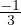,1)}⟩.
.Hx = 0⇐⇒x ∈⟨{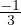,1)}⟩.
- ....
- Para cada matriz dada, encontrar los autovalores para el operador T sobre Knsin realizar cálculos. Describir los
autovectores v ∈ Knasociados a cada autovalor λanalizando las soluciones de la ecuación matricial
(A - λI)v = 0.
- A = 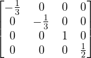
- B = 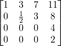
Sabemos: det(A) = λ1 λn y tr(A) = λ1 + + λn.
λn y tr(A) = λ1 + + λn.
Soluciones:
- λ1 = -
 ,λ2 = 2,λ3 =
,λ2 = 2,λ3 =  .
.
v1 = (x1,x2,0,0),v2 = (0,0,x3,0),v3 = (0,0,0,x4). Tenemos dos autovectores con un mismo autovalor
ya que hay dos autovalores repetidos, que nos dan dos columnas nulas al hacer A - (- )λI = 0, por lo
tanto el espacio nulo de esa matriz posee dos soluciones no triviales.
)λI = 0, por lo
tanto el espacio nulo de esa matriz posee dos soluciones no triviales.
A +  λI =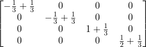 = 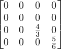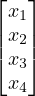 =
λI =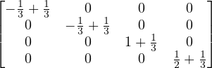 = 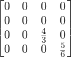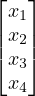 =
X ∈ 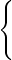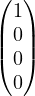,
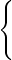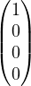,

 .
.
- λ1 = 1,λ2 =
 ,λ3 = 0,λ4 = 2.
,λ3 = 0,λ4 = 2.
- Sea V un espacio vectorial de dimensión finita sobre Ky T ∈(V ). Un espacio vectorial U se dice invariante bajo T si
T(U) ⊂ U.Supongamos que U1,U2son dos subespacios invariantes bajo T. Probar que U1 ∩U2también es invariante
bajo T.
Solución Sea v ∈ 1 ∩2 ⇒ v ∈1 ∧ v ∈2 ⇒ T(v) ∈1 ∧ T(v) ∈2 ⇒ T(v) ∈1 ∩2.
1 ∩2 ⇒ v ∈1 ∧ v ∈2 ⇒ T(v) ∈1 ∧ T(v) ∈2 ⇒ T(v) ∈1 ∩2.
- Sea V un espacio de dimensión finita sobre K,T ∈(V ) inversible y λ ∈ K -{0}. Probar que λ es autovalor de A si y
sólo si λ-1es autovalor de T-1.
Solución Sea x ∈ V∕T(x) = λx⇐⇒Ax = λx⇐⇒A-1Ax = A-1λx⇐⇒x = A-1λx⇐⇒λ-1x = A-1x.
- Sea V un espacio de dimensión finita sobre K,A ∈
 (K) matriz inversible y λ ∈ K. Probar que λ es autovalor de A si
y sólo si λ es autovalor de At.
(K) matriz inversible y λ ∈ K. Probar que λ es autovalor de A si
y sólo si λ es autovalor de At.
Solución Notemos que (A - λI)t = At - λI luego como |X| = |X|t resulta:
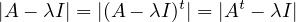
- Sea V un espacio de dimensión finita sobre K y sea T ∈(V ) con la propiedad de que todo v ∈ V -{0} es un
autovector asociado al mismo autovalor para T. Probar que T debe ser igual a un escalar por la identidad en
V .
- Completar
- Sea A = 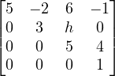 . Encontrar h tal que el autoespacio correspondiente a λ = 5 sea bidimensional.
Solución A-λI =  . |A-λI| = det
. |A-λI| = det 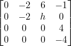
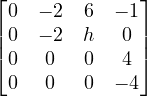 ⇐⇒det
⇐⇒det 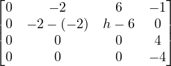
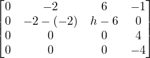 ⇐⇒det
⇐⇒det 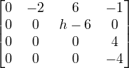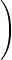.
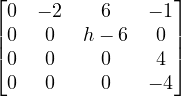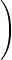.
Luego para h = 6 resultara (A - λI)x = 0⇐⇒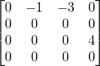x = ⇐⇒x = 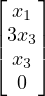 es decir, si y sólo si
x ∈⟨{(1,0,0,0),(0,3,1,0)}⟩.
- En cada uno de los siguientes items, sea A = PDP-1 y calcule A4.
- P = 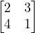,D =
![[2 0]
0 1](TODO61x.png) .
.
Solución A4 = PDP-1PDP-1…PDP-1 = PD4P-1.
Luego A4 = P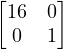P-1 = ![[ ]
32 3
64 1](TODO63x.png)
![[ 1- -3]
- 120 101
5 -5](TODO64x.png) =
= ![[ ]
- 2 9
- 6 19](TODO65x.png) .
.
- P = 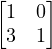,D = 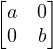.
Solución A4 = P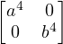P-1 = 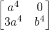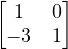 = 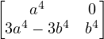.
- Completar.
- Diagonalizar las siguientes matrices:
- A =
![[ ]
2 3
4 1](TODO72x.png) .
.
- B = 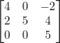 .
- C =
 .
.
- E =
 .
.
Soluciones
- |A - λI| = 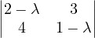 = (2 - λ)(1 - λ) - 12 = λ2 - 3λ - 10 = (x - 5)(x + 2).λ = 5 : (A - λI)x =
0⇐⇒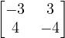
 = 0⇐⇒
= 0⇐⇒![[ ]
- 3 3
0 0](TODO79x.png) x = 0⇐⇒x ∈⟨{(1,1}⟩.
x = 0⇐⇒x ∈⟨{(1,1}⟩.
λ = -2 : (A - λI)x = 0⇐⇒![[ ]
4 3
4 3](TODO80x.png) 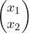 = 0⇐⇒x ∈⟨{(-
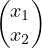 = 0⇐⇒x ∈⟨{(- ,1)}⟩.
,1)}⟩.
Luego A = PDP-1 = ![[ ]
1 - 34
1 1](TODO83x.png)
![[ ]
5 0
0 - 2](TODO84x.png) P-1.
P-1.
- |B - λI| = 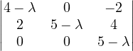 = (4 - λ)(5 - λ)2
λ = 5 : (B - λI)x = 0⇐⇒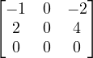x = 0 ⇔ x ∈⟨{(-2,0,1),(0,1,0)}⟩.
λ = 4 : (B - λI)x = 0⇐⇒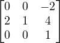x = 0⇐⇒x ∈⟨{(- ,1,0)}⟩.
,1,0)}⟩.
Luego B = PDP-1 = 
 P-1.
P-1.
- Completar.
- |E - λI| =
 = 0⇐⇒(4 - λ)2(2 - λ)2 = 0.
= 0⇐⇒(4 - λ)2(2 - λ)2 = 0.
λ = 4 : (E - 4I)x = 0 ⇔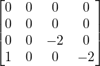 = 0⇐⇒x ∈⟨{(0,1,0,0),(2,0,0,1)}⟩.
= 0⇐⇒x ∈⟨{(0,1,0,0),(2,0,0,1)}⟩.
λ = 2 : (E - 2I)x = 0⇐⇒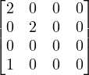x = 0 ⇔ x ∈⟨{(0,0,0,1),(0,0,1,0)}⟩.
Luego E = PDP-1 = 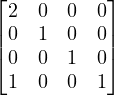 P-1.
P-1.
DIM(N(A)) = nº de columnas - rang(A).
- Sea A una matriz 3 × 3con dos autovalores. Cada autoespacio es unidimensional. Determinar si A es diagonalizable
jusutificando la respuesta.
- Demostrar que si A es tanto diagonalizable como invertible, también lo es A-1.
Solución A = PDP-1⇐⇒AA-1 = PDP-1A-1⇐⇒I = PDP-1A-1⇐⇒
P-1 = DP-1A-1⇐⇒D-1P-1 = P-1A-1⇐⇒PD-1P-1 = A-1.
-
- Describir una matriz 2 × 2 distinta de cero que sea inversible pero no diagonalizable.
- Describir una matriz 2 × 2 distinta de cero que sea diagonalizable pero no inversible.
Soluciones:
- A = 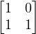.A-1 =
![[ ]
1 0
- 1 1](TODO98x.png) .
.
- B =
![[1 1]
2 2](TODO99x.png) .
.
Formas de Jordan: Teoría
Un operador T puede expresarse en la forma canónica de Jordan si sus polinomios minimales y característico se factorizan
en polinomios lineales. Esto siempre es posible si K = ℂ. En cualquier caso podemos extender el cuerpo K a uno en el cual
los polinimios minimales y característicos puedan factorizarse en factores lineales, entocnes en un sentido amplio cualquier
operador tiene una forma canónica de Jordan. Análogamente, toda matriz es semejante a una matriz en forma canónica de
Jordan.
Teorema 10 Sea T : V → V un operador lineal cuyos polinomios minimal y característico son respectivamente:

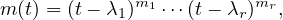
donde los λi son esacalares distintos. Entonces T tiene una representación matricial diagonal por bloques cuyos elementos
diagonales son de la forma:

Para cada λi los bloques correspondientes a Jij tienen las siguientes propiedades:
- Existe al menos un Jij de orden mi , los demás Jij son de orden ≤ mi.
- La suma de los órdenes de los Jij es ni.
- La cantidad de Jij es igual a la multiplicidad geométrica de λi (es decir la dimensión de su autoespacio).
- La cantidad de Jij de cada orden posible está determinado únicamente por T.
A la matriz J se la llama forma canónica de Jordan.
Demos: Por el Teorema 7, T se puede descomponer en operadores T1, ,Tr, esto es T = T1 ⊕
,Tr, esto es T = T1 ⊕
 Tr, donde (t-λi)mi es
el polinomio minimal de Ti. Luego en particular
Tr, donde (t-λi)mi es
el polinomio minimal de Ti. Luego en particular
Sea Ni = Ti = λiI, entonces para cada i = 1, ,r Ti = Ni + λiI, con Nimi = 0. Esto es, Ti es la suma del operador
λiI y un operador nilpotente Ni, el cual es tiene ídnice mi ya que (t - λi)mies el polinomio minimal de
Ti.
,r Ti = Ni + λiI, con Nimi = 0. Esto es, Ti es la suma del operador
λiI y un operador nilpotente Ni, el cual es tiene ídnice mi ya que (t - λi)mies el polinomio minimal de
Ti.
Ahora, podemos elegir una base tal que Ni esté en su forma canónica. En este base Ti = Ni + λiI se representa por una
matriz diagonal por bloques Mi, cuyos elementos de la diagonal son las matrices Jij. La suma directa de las matricers Mi
es una matriz J que es una forma canónica de Jordan y por el Teo. 4 es una representación matricial de
T.
Por último, veamos que los bloques Jij satisfacen las propiedades requeridas:
- Se obtiene por ser Ni de índice mi.
- Vale porque T y J tiene el mismo polinomio característico.
- Vale pues la dim(nul(Ni)) = dim(nul(Ti - λiI)) es igual a la dimensión del autoespacio correspondiente a
λi.
- Vale por estar los Ti (y los Ni) determinados únicamente por T.
Observación Jij = λiI + Ni
El polinomio mínimo se calcula cuando por ejemplo si elevas la matriz varias veces (A-λI) = 0 o cuando después de elevar
la matriz varias veces te da la misma multiplicidad del autovalor, tal que cuando elegís el vector en el paso siguiente te da 0
en esa potencia (A - λI)4w4 = 0. (Eso determina el minimal polynomial). No simpre tenés que buscar la matriz tal que
(A - λI)n = 0.
0.1 Ejemplo Jordan
A =
Polinomio característico: det(A - λI) = (2 - λ)2(-1 - λ)
Autovalores: λ1 = 2 ∧ m1 = 2 y λ2 = -1 ∧ m1 = 1
v1(2) = nul(A - 2I) = 

v2(2) = nul((A - 2I)2) = 

 ; dim(v2(1)) = 2 = m1
; dim(v2(1)) = 2 = m1
El otro autovalor:
v1(-1) = nul(A + I) = 

Buscamos un vector: w2 ∈ v2(2) - v1(2) =
Siempre empezamos del más chico hasta el más grande,w1 = (A - 2I)w2,w2 = (A - 2I)2w3
w1 = (A - 2I)w2


 w1 =
w1 = 
El número de bloques es igual a la dimensión del nul(A - λI)
Tenemos que calcular (A - λI)n hasta que tengamos la misma multiplicidad del autovalor y el vector que elegimos tiene
que cumplir que la siguiente potencia debería tener la misma dimensión. (La potencia n es la longitud del
bloque)
Hasta ahora tenemos nuestro bloque de 2 × 2. Para el siguiente bloque (de tamaño 1), podemos usar cualquier autovector
que no esté en el autoespacio del bloque 2 × 2, así que elegimos:
w3 =
Luego {v1,v2} es una base de v2(2)
= {w1,w2,w3}⇒ B = 
 w1,
w1, w2,
w2, w3
w3
Aw1 = 
 = B = 2w1
= B = 2w1
Aw2 = 
 =
=  B = 2w2 + w1
B = 2w2 + w1
Aw3 = 
 =
=  B = -w3
B = -w3
J =
J = P-1AP = P-1A
Observación: No importa el orden de los bloques de Jordan, porque representa simplemente un renombre de las vi al hacer
la base.
La lógica base de Jordan xd:
Sea A una matriz 4 × 4 con un vector propio λ de multiplicidad 4. Describa las posibles formas de Jordan dependiendo de
las multiplicidades geométrices.
Solución:
Multiplicidad geométrica = 4 = multiplicidad algebraica luego, la matriz es diagonalizable.
La dimensión del autovector de λi, se le dice multiplicidad geométrica de λi.
Es decir si la multiplicidad geométrica es 3 entonces hay 3 autovectores.

multiplicidad geométrica 2 =
u * cadena de longitud 3 corresponde a un bloque de tamaño 3x3
v → v1 → v2 = Genera dos vectores más para completar la multiplicidad.
1 autovector:
Multiplicidad geométrica = 1 o sea 1 autovector y genero 3 más para formar la matriz Jordan.
es decir: u → u1 → u2 → u3
![⌊[ ] ⌋
4 1
|| 0 4 [ 0 ]||
⌈ 4 1 ⌉
0 0 4](TODO143x.png)
Multiplicidad geométrica = 2
longitud 2 corresponden a 2 bloques de tamaño 2 × 2.
Necesito generar dos vectores más para completar la M.
Aclaraciones varias: cuando armamos la matriz jordan al vector que tenemos que buscar que debería estar
en el último autoespacio generado lo llamaremos u1 a los demás vectores u2,u3 lo generaremos a partir de
u2 = (A - λI)u1 y u3 = (A - λI)2u1, hasta hallar la base en caso de que nos falte un vector, tendríamos que ver a que
autoespacio generado anteriormente ya sea E1, ,En debería pertenecer, y debería completar la base (super
importante).
,En debería pertenecer, y debería completar la base (super
importante).
Empezas del u1,u2,u3 siempre agregas hacia la derecha y después los tomas todo al revés es decir al formar las columnas de
P tomá del último hacia el primero.
Primero tenemos que elevar la matriz (A-λI)n hasta conseguir que la dimensión del espacio nulo de la misma sea igual a
la multiplicidad algebraica del autovalor. Ahora tenemos que buscar un vector que esté en el último espacio nulo(que tiene
la misma dimensión que la multiplicidad geométrica ese autovalor) y que no este en el anterior. Luego procederemos a
calcular la imágen de ese vector en los demás espacio nulos.
Al calcular la matriz jordan de orden 4 por ejemplo de multiplicidad algebraica 2 con dos bloques de 2 × 2 tenés que tomar
un u y un v los dos tienen que ser elementos que pertenezan al último autoespacio pero no al anterior y que
sean l.i. (tenés que ampliar la base de E1 hasta llegar a la dimensión del útlimo subespacio, completando
con un autovalor de E1 si hace falta), y a partir de ellos tenés que generar las imágenes en el autoespacio
anterior.
https://www.youtube.com/watch?v=5eOPx9QMTi4 minuto 7:35
y https://www.youtube.com/watch?v=IDGp0WcOaHI
Jordan 3x3
A = |A - λI| = (λ - 2)(λ - 1)2
Autovectores: λ1 = 1, m1 = 2
λ2 = 2, m2 = 1
nul(A - 2I) =  = m2
= m2
E1 = nul(A - I) = 

E2 = nul(A - I)2 = 
 ,
,

{0}⊆ E1 ⊆ E2 = R2
Tomo un u1 ∈ E2 - E1, es decir, que esté en E2 pero no en E1 luego calculo la imágen de u1 en E1, es decir
u2 = (A - I)u1:
Luego u1 =  u2 =
u2 =  =
= 
Luego la base es 
 ,
, ,
, , ahora escribimos la base al revés, del último al primero:
P = ,J =
, ahora escribimos la base al revés, del último al primero:
P = ,J = 
Resultado: https://www.wolframalpha.com/input/?i=%28inverse+%7B%7B-8%2C6%2C1%7D%2C%7B1%2C0%2C0%7D%2C%7B-2%2C0%2C2%7D%7D%29*%7B%7B1%2C-2%2C3%7D%2C%7B0%2C2%2C0%7D%2C%7B0%2C-2%2C1%7D%7D*%7B%7B-8%2C6%2C1%7D%2C%7B1%2C0%2C0%7D%2C%7B-2%2C0%2C2%7D%7D
Para matrices en donde tengas que a partir de 2 vectores en el último subespacio generar dos imágenes tenés éste video
https://www.youtube.com/watch?v=k-ILtVBFn-Y
Jordan orden 5.
A = .
|A - λI| = (2 - λ)5
λ = 5, u = 5
Primero empezamos generando el primer espacio, del autovalor. Luego dependiendo de la dimensión seguiremos calculando
las potencias hasta llegar a al multiplicidad del autovalor.
E1 = ker(A - 2I) = 
rang(A - 2I) =  =
=
E1 = 

 ,,
,,

 . Tenemos 3 autovectores por lo tanto tendremos 3 bloques de Jordan.
. Tenemos 3 autovectores por lo tanto tendremos 3 bloques de Jordan.
E2 = ker(A - 2I)2 = . dim(E2) = 5
 3
3  2 = ℝ5, (los números abajo son la diferencia de las dimensiones de los espacios nulos)
2 = ℝ5, (los números abajo son la diferencia de las dimensiones de los espacios nulos)
Entonces tenemos que tomar dos vectores en E2 y encontrar su imágen en E1 hasta completar la base de
ℝ5.
El vector u es un vector que pertenece a E2 = R5 pero no a E1.
u =  , v =
, v = 
= {u,esto representa la imágen de u en la base E1,v,(A - 2I)v,w}
Luego la matriz de paso es, el último hasta el primero, primero escribimos el último vector de la base anterior:
P = 
Despues para formar la matriz Jordan, podés hacer tipo [Av0]B pero si te das cuenta es intuitivo y podés calcularlo sin
hacer eso, primero los autovalores van siempre en la diagonal, ahora tenemos que ver a que autovalor corresponde cada
vector de la matriz de paso, sabemos por la multiplicidad geométrica (la dimensión de E1) que posee 3 bloques, hay casos
en los que vas a tener dos autovalores con dimensiones distintas cada una la suma de los dos es la cantidad de bloques, en
este ejercicio sólo tenemos un autovalor. El primer vector corresponde al autovalor 2 pero es independiente de las otras, es
decir no tuviste que generar nada no te da problema, en el segundo como a partir de ese vector generaste otro va un 1,
entonces
J =  para demostrar otra forma si hacemos
[Av0]B = (-1,-1,0,0,0)+(-1,1,2,0,0) = (-2,0,2,0,0) = 2v0(v0 es la primer columna de P,as
para demostrar otra forma si hacemos
[Av0]B = (-1,-1,0,0,0)+(-1,1,2,0,0) = (-2,0,2,0,0) = 2v0(v0 es la primer columna de P,as con la demas) = (2,0,0,0,0)
con la demas) = (2,0,0,0,0)
(que es la primer columna de Jordan)
[Av1]B = (-1,-1,0,0,0) + (-1,3,0,0,0) + (1,-1,0,-1,-1) + (-1,1,0,-1,3) = (-2,2,0,-2,-2) = 2v1 = (0,2,0,0,0)

así con los demás pero no hace falta se puede deducir la matriz Jordan sin hacer todos esos cálculos.
Práctica 6: FORMAS DE JORDAN
- Sea T : V → V una transformación lineal. Mostrar que cada uno de los siguientes subespacios son invariantes
por T:

Soluciones
- W = {0}⊆seV .
Sea w = 0 ∈ W, T(0) = 0 ∈ W, {0} es invariante por T.
- V ⊆seV .
Sea v ∈ V ⇒ T(v) T:V →V V . Luego V es invariante por T.
T:V →V V . Luego V es invariante por T.
- nul(T) ⊆seV .
Sea w ∈ nul(T), T(w) w∈nul(T)0
w∈nul(T)0 T(0)=0 pues T linealnul(T).
T(0)=0 pues T linealnul(T).
- im(T) ⊆seV .
Sea w ∈ im(T) ⊂ V, ¿T(w) ∈ im(T)?
Tomando v = w resulta im(T) invariante por T.
- Sea {Wi} una colección de subespacios de un espacio vectorial V invariantes por T. Mostrar que W = ⋂
iWi también
es invariante por T.
Sea w ∈ W
w=⋂
iWiw ∈ Wi ∀iWi inv.×TT(w) ∈ Wi ∀i T(w) ∈⋂
iWi.
T(w) ∈⋂
iWi.
- Hallar todos los subespacios invariantes de A = considerada como operador lineal sobre ℝ2.
T : ℝ2 → ℝ2∕T(x) = Ax con A = .
- Por (1) {0}, ℝ2,nul(A),col(A) ser subespacios invariantes.
- Por otro lado, los vectores propios de un operador lineal T : V → V pueden caracterizarse como
generadores de subespacios invariantes de T de dimensión 1.
Supongamos T(v) = λv,v ⁄= 0 entonces W = {αv : α ∈ K} es invariante por T pues T(αv) = αT(v) =
α(λv) = (αλ)v ∈ W.
Recíprocamente, supongamos dim(U) = 1, U = ⟨u⟩ y U invariante por T. Entonces, como T(u) ∈ U,
resulta T(u) = βU para algún β ∈ K, con lo que resulta un autovector de T.
Pensando matricialmente, debemos hallar los v ⁄= 0∣Av = λv y luego Wi = ⟨vi⟩ serán los subespacios de
ℝ2 invariantes por T de dim 1.
(A - λI)v = 0⇐⇒![[2- λ - 5 ]
1 - 2- λ](TODO199x.png) =
=  ⇐⇒
⇐⇒
⇒ v1 = (2+λ)v2 ∧(2-λ)(2+λ)v2 -5v2 = 0 ⇒ (-1-λ2)v2 = 0⇒ v2 = 0 si esto ocurre v1 = 0 y v = 0.
Absurdo! (v autovector).
Ya analizamos todas las posibilidades de subespacios de ℝ2 invariantes por T, ya que estos son o bien de
dimensión 1 o 2.
Por lo tanto, los únicos subespacios invariantes de A son {0} y ℝ2.
- Sea
 la restricción de un operador T a un subespacio invariante W, es decir
la restricción de un operador T a un subespacio invariante W, es decir  w = Tw,∀w ∈ W. Probar que para
todo polinomio p(t),f(
w = Tw,∀w ∈ W. Probar que para
todo polinomio p(t),f( )w = f(T)w.
)w = f(T)w.
T : V → V, W ⊆seV invariante por T y  = T∣w ie,
= T∣w ie,  w = Tw,∀w ∈ W.
w = Tw,∀w ∈ W.
Veamos que para todo polinomio p(t), p( )(w) = p(T)(w)
)(w) = p(T)(w)
- Si p(t) = 0 o p(t) = cte el resultado vale
- Lo probamos por inducción sobre el grado del polinomio.
n = 1, p(t) = a1t + a0
p( )(w) = (a1)(w) + a0 = a1(
)(w) = (a1)(w) + a0 = a1( (w)) + a0 = a1(T(w)) + a0 = (a1T)(w) + a0 = p(T)(w).
(w)) + a0 = a1(T(w)) + a0 = (a1T)(w) + a0 = p(T)(w).
Supongamos que vale para n - 1
Lo probamos para n
p(t) = antn + an-1tn-1 + a1t + a0. Luego,
+ a1t + a0. Luego,
p( )(w) = (an
)(w) = (an n + an-1
n + an-1 n-1 +
n-1 +  + a1
+ a1 1 + a0
1 + a0 
 0)(w) =
0)(w) =
= (an n-1)((w)) + (an-1
n-1)((w)) + (an-1 n1 +
n1 +  + a0I)(w)
+ a0I)(w) HI
HI
= (anTn-1)( (w)) + (an-1Tn-1 +
(w)) + (an-1Tn-1 +  + a0I)(w)
+ a0I)(w) T(w)=
T(w)= (w)
(w)
= (anT)(T(w)) + (an-1Tn-1 +  + a0I)(w) = p(T)(w)
+ a0I)(w) = p(T)(w)
∴Vale ∀n ∈ ℕ.
- Sea T : V → V,T ∈(V ). Supongamos que para todo v ∈ V se tiene que Tkv = 0 pero Tk-1v ⁄= 0. Probar
que:
- S = {Tk-1,…,Tv,v} es linealmente independiente.
- El subespacio W = ⟨X⟩ es invariante por T.
T : V → V,T ∈(V ) ∀v ∈ V Tk(v) = 0 pero Tk-1(v) ⁄= 0.
- Probar que S = {Tk-1(v),
 ,T(v),v} es linealmente independite.
,T(v),v} es linealmente independite.
Consideremosα0v + a1T(v) +  + at-1Tk-1(v) = 0
+ at-1Tk-1(v) = 0
a0v + ∑
i=1k-1α
iTi(v) = 0
Luego Tk-1(α0v + ∑
i=1k-1α
iTi(v)) = Tk-1(0)Tk-1lineal0Tk-1lineal
α0Tk-1(v) + ∑
i=1k-1α
i  =0 = 0
=0 = 0
 α0Tk-1(v) = 0 ∧ Tk-1(v) ⁄= 0
α0Tk-1(v) = 0 ∧ Tk-1(v) ⁄= 0 α0 = 0
α0 = 0
Teniendo en cuenta que α0 = 0, de (1) tenemos
α1T(v) +  + αk-1Tk-1(v) = 0
+ αk-1Tk-1(v) = 0
Aplicamos Tk-2 y con un razonamiento análogo al anterior obtenemos α1 = 0
Aplicamos iterativamente este procedimiento resulta
αi = 0 ∀i = 0 → k - 1
∴ S es un conjunto de vectores linealmente independiente.
- W = ⟨S⟩ es invariante por T.
Sea w ∈ W, luego w = ∑
i=0k-1α
iTi(v).
Ahora bien T(w) T lineal∑
i=0k-1α
iTi+1(v)
T lineal∑
i=0k-1α
iTi+1(v) Tk(v)=0∑
i=0k-2α
iTi+1(v) =
Tk(v)=0∑
i=0k-2α
iTi+1(v) =
= ∑
i=1k-1α
i-1Ti(v) W subesp.W.
W subesp.W.
∴ W es invariante por T.
- Sea T ∈(V ), probar que
- {0} = nul(T0) ⊂ nul(T1) ⊂
 ⊂ nul(Tk) ⊂ nul(Tk+1) ⊂…
⊂ nul(Tk) ⊂ nul(Tk+1) ⊂…
- nul(Tm) = nul(Tm+1) ⇒ nul(Tm) = nul(Tm+1) = nul(Tm+2) = ...
- Si dimV = n luego nul(Tn) = nul(Tn+1) = ….
Soluciones
- {0} = nul(T0) ⊂ nul(T1) ⊂
 ⊂ nul(Tk) ⊂ nul(Tk+1) ⊂
⊂ nul(Tk) ⊂ nul(Tk+1) ⊂
Primero observemos que nul(T0) = nul(I) = {v ∈ V ∣Iv = 0} = {v ∈ V ∣v = 0} = {0}
Ahora bien, veamos que nul(Tk) ⊂ nul(Tk+1) ∀k ∈ ℕ0
Sea v ∈ nul(Tk) ⇒ Tk(v) = 0. Aplicamos T y así
T(Tk(v)) = T(0) = 0 ⇔ v ∈ nul(Tk-e1)
∴ nul(Tk) ⊂ nul(Tk+1) ∀k ∈ ℕ0.
- Sea nul(Tn) = nul(Tn+1), luego nul(Tn) = nul(Tn+1) = nul(Tn+2) =
Consideramos nul(Tn+i-1) veamos que nul(Tmn-1) = nul(Tn+i) ∀i ∈ k ∈ ℕ0
Lo probamos por inducción
- Si i = 1 vale por hipótesis.
- Suponemos que vale para algún i = nul(Tn+i-1) = nul(Tn+i)
- Lo probamos para i + 1
nul(Tn+i+1) = {v ∈ V ∣Tn+i+1(v) = 0} = {v ∈ V ∣Tn+i(T(v)) = 0} =
 HI{v ∈ V ∣Tn+i-1(T(v)) = 0} = {v ∈ V ∣Tn+i(v) = 0} = nul(Tn+i).
HI{v ∈ V ∣Tn+i-1(T(v)) = 0} = {v ∈ V ∣Tn+i(v) = 0} = nul(Tn+i).
- Sea T ∈(V ), dim(V ) = n, luego V = nul(Tn) ⊕ img(Tn).
- Determinar todas las posibles formas canónicas de Jordan para una matriz de orden 5 cuyo polinomio minimal es
m(t) = (t - 2)2.
Solución
n(t) = (t- 2)2 existe al menos un bloque de orden 2 × 2 y los demás bloques correspondientes a λ = 2 son de orden
≤ 2.
- Determinar todas las posibles formas canónicas de Jordan para una matriz con polinomio característico
pA(t) = (t + 2)3(t - 7)2. En cada caso determinar el polinomio minimal m(t).
pA(t) =  -2 aparece 3 veces en la diag princial × 7 aparece 2 veces en la diag principal
-2 aparece 3 veces en la diag princial × 7 aparece 2 veces en la diag principal
Los posibles formas canónicass de Jordan con sus polinomios minimales son:
Práctica 2: Espacios Vectoriales
- Sea ⟨S⟩ el subespacio generado por un subconjunto S de V . Demos las siguientes propiedades:
- Si S ⊂ T, entonces ⟨S⟩⊂⟨T⟩.
- S ⊂⟨S⟩.
- Si S ⊂ T y T es un subespacio de V, entonces ⟨S⟩⊂ T. Es decir ⟨S⟩ es el menor subespacio de V que
contiene a S.
- S es un subespacio de V si y sólo si ⟨S⟩ = S.
- Si ⟨S⟩ = , entonces ⟨⟩ = .
- Sea W ⊂ V . Entonces
- ⟨S ∩ W⟩⊂⟨S⟩∩⟨W⟩,
- ⟨S ∪ W⟩⊂⟨S⟩ + ⟨W⟩.
- Valen las contenciones inversas en los ítems a) y f).
SOLUCIONES:
- Sea s ∈⟨S⟩
 ∑
v∈Sαvv y como v ∈ S ⇒ v ∈ T.
∑
v∈Sαvv y como v ∈ S ⇒ v ∈ T.
- Sea s ∈ S
 s = 1s + ∑
v∈S-s0v, por lo que resulta s ∈⟨S⟩.
s = 1s + ∑
v∈S-s0v, por lo que resulta s ∈⟨S⟩.
- Sea s ∈⟨S⟩ luego ∑
v∈Sαvv como v ∈ S ⇒ v ∈ T y como T es un subespacio se cumple la clausura
bajo de la suma y del producto entonces s ∈ T.
- ⇐) Trivial pues si S es un subespacio de V cumple la clausura bajo la suma y el producto luego, ⟨S⟩ = S.
⇒) S es un subespacio ⇒ S ⊆⟨S⟩. S ⊆ S y S es un subespacio de V por lo tanto⟨S⟩⊆ S.
 )
)
- ⟨U⟩⊆ U
Si ⟨S⟩ = U S ⊆ U = ⟨S⟩ y U es un subespacio de v. (No estoy seguro).
S ⊆ U = ⟨S⟩ y U es un subespacio de v. (No estoy seguro).
- U ⊆⟨U⟩
- Analizar si los siguientes vectores son linealmente independientes.
- (1,1,0,0);(1,0,1,0);(0,0,1,1);(0,1,0,1)
- (1,1,0);(1,0,0);(0,1,1);(x,y,z) para x,y,z cualesquiera.
Soluciones:
- α(1,1,0,0) + β(1,0,1,0) + γ(0,0,1,1) + δ(0,1,0,1) = 0
 α = β = γ = δ = 0.
α = β = γ = δ = 0.
= (α + β,α + δ,β + γ,γ + δ) = 0. O podemos hacer reducción por filas sobre los vectores.
→. Luego como tenemos una columna nula, el rango de esta matriz
es 3 (el rango son las filas no nulas luego de la eliminación de filas), α + β = 0,-β + δ = 0,γ + δ = 0
( es decir tengo que encontrar una solución no trivial, que no sean todos los escalares nulos, tal que el
sistema me de la solución nula. Por ejemplo -1(1,1,0,0) + 1(1,0,1,0) - 1(0,0,1,1) + 1(0,1,0,1).
- Claramente para (x,y,z) = (1,0,0) resulta 0 = 1(1,1,0) + 0(1,0,0) + 0(0,1,1) - 1(x,y,z), luego no son
linealmente independientes.
- Sea P = {(x,y,z,t) ∈ ℝ4 : x- 2y + z -t = 0}. Verificar que P es un espacio vectorial y hallar 3 vectores linealmente
independientes en P.
En efecto, sean u = (x1,y1,z1,t1) ∈ P, v = (x2,y2,z,2,t2) ∈ P y α ∈ K. Luego:
- Sabemos que x1 - 2y1 + z1 - t1 = 0 y x2 - 2y2 + z2 - t2 = 0 y sumando ambas ecuaciones:
(x1+x2)-2(y1+y2)+(z1+z2)-(t1+t2) = 0 por lo que u+v = (x1+x2,y1+y2,z1+z2+t1+t2) ∈ P.
- αu = (αx1,αy1,αz1,αt1) ∈ P pues multiplicando ambos lados por α tenemos que αx1 - 2(αy1) + αz1 -
αt1 = 0.
- Para encontrar los vectores que generan esos espacios podemos reescribir la ecuación como x = 2y-z+t.
Luego tenemos que , sacando factor común y
 +z +t
+z +t , que son los 3 vectores
linealmente independientes que generan a P. También debemos recordar que si estamos hablando de
vectores de ℝn y ya tenemos una simple condición/ecuación que deben cumplir los vectores el subespacio
va a tener una dimensión menor a n.
, que son los 3 vectores
linealmente independientes que generan a P. También debemos recordar que si estamos hablando de
vectores de ℝn y ya tenemos una simple condición/ecuación que deben cumplir los vectores el subespacio
va a tener una dimensión menor a n.
- Si {v1,v2,v3}⊂ V es un conjunto l.i., probar que {v1 + v2,v1 + v3,v2 + v3} también es l.i.
Suponemos que αv1 + βv2 + γv3 = 0 ⇒ α = β = γ = 0.Ahora vamos a ver que {v1 + v2,v1 + v3,v2 + v3}
también es l.i., para ello tenemos que probar que la única solución nula sea que todos los escalares sean
ceros.
α(v1 + v2) + β(v1 + v3) + γ(v2 + v3) = 0 ⇒ αv1 + αv2 + βv1 + βv3 + γv2 + γv3 = 0 ⇒
(α + β)v1 + (α + γ)v2 + (β + γ)v3 = 0 y como V es linealmente independiente tenemos que resolver
α1 + α2 = 0,α1 + α3 = 0 y α2 + α3 = 0 por lo que resolviendo el sistema obtenemos α1 = α2 = α3 = 0.
- Sea V un espacio vectorial de dimensión finta y W un subespacio de V tal que dim(V ) = dim(W). Probar que
V = W.
- Sea A = {(1,-3,2)t,(2,4,1)t,(3,1,3)t,(1,1,1) ⊂ ℝ3, obtener:
- Una base de ℝ3 contenida en A.
- Las componentes de los vectores de la base canónica de ℝ3 en la base obtenida en el apartado anterior.
Soluciones:
 →
→ →
→ .
.
B = 

 ,
, ,
,


- α(1,1,1) + β(2,4,1) + γ(3,1,3) = (α + 2β + 3γ,-3α + 4β + γ,2α + β + 3γ) = 0.
[1,0,0]B = (α + 2β + 3γ,α + 4β + γ,α + β + 3γ).
1 = α + 2β + 3γ
0 = α + 4β + γ
0 = α + β + 3γ
Ahora sólo despejamos las variables y listo o también podemos hacer la matriz aumentada y luego aplicar
reducción por filas para llegar a la solución.
[1,0,0]B = (- ,1,
,1, )
)
[0,1,0]B = ( ,0,-
,0,- )
)
[0,0,1]B = (5,-1,-1)
- Sea S = ⟨{(1,-1,1)t,(2,1,0)t,(4,-1,2)t}⟩⊂ ℝ3. Obtener una base de S.
No es linealmente independiente ya que (0,0,0) = 2(1,-1,1) + 1(2,1,0) - 1(4,-1,2).
Esto significa que un vector puede ser escrito como combinación lineal de otros, lo pedemos ver en la ecuación anterior
simplemente despejando algún vector.
Entonces sacaremos un vector del conjunto tomaremos como base de S: ⟨{1,-1,1},(2,1,0)⟩, podemos verificar que
son l.i. multiplicandolo a cada vector por un escalares a1,a2,a3 y ver si la única solución que posee es
cuando todos los escalares se hacen 0. O haciendo eliminación por filas y que no nos quede ninguna fila
nula.
- Encontrar la dimensión de:
- el espacio de todos los vectores de ℝ4 cuyas componentes suman cero.
- el espacio nulo de la matriz I ∈4×4.
- el espacio de matrices simétricas 3 × 3. Hallar una base.
Soluciones:
- A =

 ∈ ℝ4 : x
1 + x2 + x3 + x4 = 0
∈ ℝ4 : x
1 + x2 + x3 + x4 = 0 , entonces se cumple que x1 + x2 + x3 + x4 = 0 ⇒ x1 =
-x2 - x3 - x4 luego
, entonces se cumple que x1 + x2 + x3 + x4 = 0 ⇒ x1 =
-x2 - x3 - x4 luego
 , sacando factor común obtendremos 3 vectores que van a ser la base de este subespacio.
Y como la dimensión es la cantidad de elementos de la base, entonces la dimensión es 3.
, sacando factor común obtendremos 3 vectores que van a ser la base de este subespacio.
Y como la dimensión es la cantidad de elementos de la base, entonces la dimensión es 3.
- N(I) = 0 ya que usando el teorema de la dimensión DIM(N(A)) = n - r. (nº de columnas - rango
= número de filas no nulas luego de la eliminación por filas a una matriz escalonada). En este caso la
matriz identidad tiene rango 4 y el número de columna es 4, luego el nulo de la matriz identidad es 0.
- DIM


 ,,,,
,,,, ,
,

 = 6
= 6
- Describir los cuatro espacios asociados a las siguientes matrices:
![a)A = [00 12 48 00] b)B = ⌊||⌈0000 1000 0100 0010⌋||⌉](TODO289x.png)
Soluciones:
- Primero hacemos reducción por filas para ver cual es el rango(nº de filas no nulas) de A y At y cuáles
columnas son linealmente independientes. A = →
![[0 1 4 0]
0 0 0 0](TODO291x.png) . Como el rango es 1,
luego el espacio columna está generado por sólo un vector de la matriz, que se toma desde la matriz
original, no del resultado de la reducción por filas.
. Como el rango es 1,
luego el espacio columna está generado por sólo un vector de la matriz, que se toma desde la matriz
original, no del resultado de la reducción por filas.
AT =  F3=F3-4F2
F3=F3-4F2 , el rango de esta matriz coincide con el rango del espacio columna
de A, es decir, es 1.
, el rango de esta matriz coincide con el rango del espacio columna
de A, es decir, es 1.
Recordemos que RowSpace(A) = C(AT) y dim(C(A)) = dim(C(AT))
dim(C(A)) = 1;dim(C(AT)) = 1;dim(N(A)) = n(cant de columnas) - r(rango) = 4 - 1 =
3;dim(N(AT)) = m(n de filas) - r(rango) = 2 - 1 = 1
 =
= ![[ ]
0
0](TODO297x.png)
 N(AT) =
N(AT) = 

![[ ]
0 1 4 0
0 0 0 0](TODO302x.png) =
= ![[ ]
0
0](TODO304x.png) ⇒ N(A) =
⇒ N(A) = 
 ,
, ,
,


Como la dimensión de C(A) = 1 entonces tomamos un vector de la matriz original, análogamente con
C(AT).
C(A) = 

C(AT) = 

- Sea B1 = {v1,v2v3} una base para un espacio vectorial V. (Este ejercicio no lo hice yo)
- Demostrar que B2 = {v1,v1 + v2,v1 + v2 + v3} también es una base.
- Hallar la matriz de cambio de base A∕[v]B1 = A[v]B2
- Para que B2 sea una base tenemos que verificar que sean linealmente independientes y que la dimensión
sea la misma.

Ahora para comprobar que es linealmente independiente hacemos:
α(v1) + β(v1 + v2) + γ(v1 + v2 + v3) = 0 y sólo deberíamos obtener la solución donde todos los escalares
sean ceros.  (α+β+γ)v3+(β+γ)v2+(γ)v3 = 0 y como sabemos que B1 es linealmente independiente
entonces tenemos que resolver 0 = (α + β + γ) = (β + γ) = γ.
(α+β+γ)v3+(β+γ)v2+(γ)v3 = 0 y como sabemos que B1 es linealmente independiente
entonces tenemos que resolver 0 = (α + β + γ) = (β + γ) = γ.
Luego γ = 0 ⇒ β = 0 y α = 0. Por lo que hemos probado que también es una base de V .
- [v]B1 = A[v]B2
Recordemos que la matriz de cambio de base está formada por:
[v1]B1 = 1v1 + 0v2 + 0v3
[v1 + v2]B1 = 1v1 + 1v2 + 0v3
[v1 + v2 + v3]B1 = 1v1 + 1v2 + 1v3
Copiando las coordenadas anteriormente calculadas obtenemos: 
- Dar en cada caso una matriz que cumpla las condiciones dados o jutificar porque no existe.
- Su espacio columna está generado por los vectores (1,0,0)t,(0,0,1)t y su espacio fila está generado por
(1,1)t,(1,2)t.
- Su espacio columna tiene al vector (1,1,1)t como base y su espacio fila tiene como base al vector (1,2,1)t.
- Su espacio columna contiene a los vectores (1,1,0)t,(1,0,1)t pero no al vector (1,1,1)t.
- Su espacio columna contiene a (1,2,1)t,su espacio nulo contiene a (-1,0,1)t y tiene determinante -1.
- C(A) = ,AT = ;C(AT) =
![[1 1]
1 2](TODO324x.png) → →
→ →![[1 0]
0 1](TODO326x.png) ,
,
C(AT) = ⟨{(1,0)t,(0,1)t}⟩ = ⟨{(1,1)t,(1,2)t}⟩
podemos tomar la matriz A = , ya que C(AT) = ⟨{(1,1)t,(1,2)t}⟩ = ⟨{(1,0)t,(0,1)t}⟩.
- C(A) =

 ,C(AT) =
,C(AT) = 

 . Repasando teoremas tenemos que obligatoriamente debe pasar
que dim(C(A)) = dim(C(AT)) = rango y N(A) = n - r = n - 1
. Repasando teoremas tenemos que obligatoriamente debe pasar
que dim(C(A)) = dim(C(AT)) = rango y N(A) = n - r = n - 1
A =  ,AT =
,AT =
- (1,1,1) = a1(1,1,0) + a2(1,0,1) ⇒

 a1 + a2 ⁄= 1
a1 + a2 ⁄= 1
Es decir, los 3 vectores son linealmente independientes.
Luego no existe ninguna combinación lineal de los vectores (1,1,0) y (1,0,1) que de como resultado al
vector (1,1,1).
Nos bastaría con tomar la matriz A = 
- Si N(A) = 0 ⇒ A posee columnas independientes y dim(A) ⁄= 0.
Ahora si tenemos N(A) ⁄= ∅ entonces si o si dim(A) = 0 ya que las columnas no son independientes.
En este caso se nos pide una matriz en la que el nulo de la matriz contiene un vector (lo que implicaría
que los vectores son l.d.) y a su vez nos pide que su determinante sea |A|⁄= 0, lo cual no es posible, ya
que si el determinante es |A|⁄= 0 implicaría que sus columnas son independientes por lo tanto el espacio
nulo debería contener solo al {0}.
- Sea V =
 ∑
i=0na
ixi∕a
i ∈ ℝ
∑
i=0na
ixi∕a
i ∈ ℝ y B1 = {1,x,x2} base estándar de V .
y B1 = {1,x,x2} base estándar de V .
- Probar que B2 = {x - 1,1,(x - 1)2} es otra base de V.
- Hallar la matriz de cambio de base de B1 a B2.
- Utilizar lo obtenido en el item anterior y determinar [p]B2 donde p(x) = 2x2 - 5x + 6. ¿Cuáles son las
coordenadas de p en la base {(1,(x - 1)2,x - 1}?
- Lo primero que hacemos es calcular la dimensión de la base dim(V ) = 3 = |B1| = |B2|. Ahora sólo nos
resta probar que B2 es linealmente independiente.
a(x - 1) + b(1) + c(x - 1)2 = 0 ax - a + b + c(x2 - 2x + 1) = 0
ax - a + b + c(x2 - 2x + 1) = 0 ax - a + b + cx2 - 2cx + c =
0
ax - a + b + cx2 - 2cx + c =
0 cx2 + (a - 2c)x - a + b + c = 0
cx2 + (a - 2c)x - a + b + c = 0

 c = 0;a = 0;b = 0
c = 0;a = 0;b = 0
Luego B2 genera a V por lo tanto también una base para V .
-
![[ ]
PB2←B1 [1]B2 [x]B2 [x2]B2](TODO347x.png)
[1]B2 = 0(x - 1) + 1(1) + 0((x - 1)2)
[x]B2 = 1(x - 1) + 1(1) + 0((x - 1)2)
[x2]B2 = a(x - 1) + b(1) + c(x - 1)2 = ax - a + b + c(x2 - 2x + 1) = ax - a + b + cx2 - 2cx + c =
cx2 + (a - 2c)x + -a + b + c


Hay otra forma de calcular la matriz cambio de base haciendo lo siguiente:
reducción
Volviendo a lo anterior:
Luego PB2←B1
Ejemplo de como usar la matriz de cambio de base, en este caso el vector (1,1,1) representa a
1(1) + 1(x) + 1(x2) en la base B1.
PB2←B1 = 1 ⋅
= 1 ⋅ + 1 ⋅
+ 1 ⋅ + 1 ⋅
+ 1 ⋅ =
= 
 B
2 = 3(x - 1) + 1 + 1(x - 1)2 = 3x - 3 + 1 + x2 - 2x + 1 = x2 + x + 1.
B
2 = 3(x - 1) + 1 + 1(x - 1)2 = 3x - 3 + 1 + x2 - 2x + 1 = x2 + x + 1.
Obtuvimos el mismo resultado en diferentes bases.
- [2x2 - 5x + 6]B2 = =
B
2 = -1(x - 1) + 3(1) + 2[(x - 1)2] = 2x2 - 5x + 6
- Hallar la matriz cambio de base de:
- la base estándar de ℝ2×2 a la base
B′ = 
 ,
, ,
, ,
,

Determinar [A]B′ para A ∈ ℝ2×2.
- la base {1,x,-1 + 2x2,-3x + 4x3} de ℝ3[x] a la base {1,-
 + x,-x + x2,
+ x,-x + x2, -
- x2 + x3}.
x2 + x3}.
- Tenemos que pasar de la base estándar:

![[ ]
1 0
0 0](TODO378x.png) ,
,![[ ]
0 1
0 0](TODO379x.png) ,
,![[ ]
0 0
1 0](TODO380x.png) ,
,
B′ = 
 ,
, ,
, ,
,
 .
.
Para hacer eso calculamos la matriz cambio de base PB′←B![[1 0]
0 0](TODO390x.png) B′,B′,
B′,B′,![[0 0]
1 0](TODO392x.png) B′,
B′,![[0 0]
0 1](TODO393x.png) B′
B′
![[ ]
1 0
0 0](TODO395x.png) B′ = a
B′ = a +b
+b +c
+c +d
+d = 0
= 0 -1
-1 +0 +
0
+0 +
0
B′ = 1 + 1
+ 1 + 0
+ 0 + 0
+ 0
![[0 0]
1 0](TODO409x.png) B′ = 0
B′ = 0 - 2
- 2 - 1
- 1 + 0
+ 0
![[ ]
0 0
0 1](TODO414x.png) B′ = -
B′ = -
 + +
+ +  +
+ 

PB′←B =
= 
 B2
B2  ???
???![[ ]
1 1
1 1](TODO428x.png) Calculamos:
Calculamos:  -
- -
-
 +
+
 efectivamente
nos da como resultado la matriz .
efectivamente
nos da como resultado la matriz .
- Hago la matriz cambio de base de la base B = {1,x,-1 + 2x2,-3x + 4x3} de ℝ3[x] a la base
B′ = {1,-
 + x,-x + x2,
+ x,-x + x2, -
- x2 + x3}.
x2 + x3}.
PB′←B![[ 2 3 ]
[1]B2 [x]B2 [- 1 + 2x ]B2 [- 3x+ 4x ]B2](TODO441x.png)
[1]B2 = 1(1) + 0(- + x) + 0(-x + x2) + 0(
+ x) + 0(-x + x2) + 0( -
- x2 + x3)
x2 + x3)
[x]B2 =  (1) + 1(-
(1) + 1(- + x) + 0(-x + x2) + 0(
+ x) + 0(-x + x2) + 0( -
- x2 + x3)
x2 + x3)
[-1 + 2x]B22 = 0(1) + 2(- + x) + 0(-x + x2) + 0(
+ x) + 0(-x + x2) + 0( -
- x2 + x3)
x2 + x3)
[-3x+4x3]B2 = a(1)+b(- +x)+c(-x+x2)+d(
+x)+c(-x+x2)+d( -
- x2+x3) = a-+bx-cx+cx2+-
x2+x3) = a-+bx-cx+cx2+- dx2+dx3
dx2+dx3
dx3 + (c- d)x2 + (b-c)x + a-
d)x2 + (b-c)x + a- + = -3x + 4x3. Entonces por igualdad de polinomios nos queda el
siguiente sistema:
+ = -3x + 4x3. Entonces por igualdad de polinomios nos queda el
siguiente sistema:


La matriz de cambio de base nos quedaría:
PB′←B
- COMPLETAR ÚLTIMO EJ.
Práctica 3: Transformaciones Lineales
- Para cada una de las siguientes funciones T : ℝ2 → ℝ2 determinar si se trata de una transformación
lineales y en caso afirmativo: obtener nul(T), img(T), calcular sus dimensiones y determinar si T es
inversible.
- T((x,y)) = (y,x)
- T((x,y)) = (x2,y2)
- T((x,y)) = (x,-y)
- T((x,y)) = (x,0)
Para probar que es lineal tengo que ver que se cumpla lo siguiente: T(u + v) = T(u) + T(v) y T(αv) = αT(v).
- img(T) = {y(1,0) + x(0,1) : x,y ∈ ℝ} = ⟨{(0,1),(1,0)}⟩ = ℝ2. Luego dim(img(T)) = 2. O también lo
podemos calcular así:
img(T) = {(x,y) ∈ ℝ2∣T(x,y) = (a,b)}
nul(T) = {(x,y) ∈ ℝ∣T(x,y) = (0,0)}⇒{(x,y) ∈ ℝ2 : (y,x) = (0,0)} = {0}. Además nul(T) = n - r,
donde n sería la dimensión del espacio vectorial donde se mueve T. Como nul(T) = {0} entonces decimos
que T es inyectiva, y como img(T) = ℝ2 entonces T también es sobreyectiva.
Luego T al ser biyectiva, es inyectiva.
Sea u = (x1,y1) y v = (x2,y2)
T(u + v) = T((x1,y1) + (x2,y2)) = T((x1 + x2,y1 + y2)) = (y1 + y2,x1 + x2) =
= T(u) + T(v) = T(x1,y1) + T(x2,y2) = (y1,x1) + (y2,x2) = (y1 + y2,x1 + x2)
Por lo tanto T es una transformación lineal.
- No es una transformación lineal, ya que no se cumple la clausura bajo el producto tomando u = (1,0) y
a = -1 tenemos que
T(au) = T(-1(1,0)) = T((-1,0)) = ((-1)2,02) = (1,0) ⁄= (-1,0) = -1(1,0) = aT(u)
- img(T) = {(x,0) + (0,-y)∣x,y ∈ ℝ} = ⟨(1,0) + (0,-1)⟩ = ℝ2. Luego dim(img(T)) = 2.
Por lo tanto el nulo de T sólo contiene al {0}, como vimos anteriormente dim(nul(T)) = n - r.
Sea u = (u1,u2) y v = (v1,v2) probemos entonces que es una transformación lineal
T(u + v) = T((u1 + v1,u2 + v2)) = (u1 + v1,-u2 - v2) =
= T(u) + T(v) = T(u1,u2) + T(v1,v2) = (u1,-u2) + (v1,-v2) = (u1 + v1,-u2 - v2)
Luego T es una transformación lineal.
- img(T) = {(x,0)∣x ∈ ℝ} = ⟨(1,0)⟩. Luego dim(img(T)) = 1. (No es sobreyectiva)
Por lo tanto ya sabemos que el nulo de T va a contener un elemento, dim(nul(T)) = n - r = 2 - 1 = 1
(No es inyectiva)
Observemos que el espacio nulo siempre es la entrada de la función, el espacio nulo se genera a partir
del dominio que de como resultado al 0, ya sea 0 de polinomios, vectores, matrices. Entoncen sin hacer
ningún cálculo ya sabemos que el nul(T) = {(0,y) : y ∈ ℝ} = {y(0,1) : y ∈ ℝ} = ⟨{0,1}⟩, es decir todas
las comb. lineales de ese vector ya que darían como resultado al 0.
Otra forma:
nul(T) = {(x,y) ∈ ℝ : T(x,y) = (0,0)} = {(x,y) ∈ ℝ : (x,0) = (0,0)}
, es decir el y puede valer cualquier cosa.
Luego, T no es invertible.
Ahora verificamos si es lineal, tomando u = (u1,u1) y v = (v1,v2)
T(u + v) = T(u1 + v1,v1 + v2) = (u1 + v1,0) = (u1,0) + (v2 + 0) = T(u1,u1) + T(v2,v2) = T(u) + T(v)
T(a(u)) = T(a(u1,u2)) = T(au1,au2) = (au1,0) = aT(u1,u2) = aT(u)
Luego T es una TL.
- Sea V = ℝ2, fijamos la base canónica B = {e1,e2,
 ,en}. Para cada Ti : ℝn → ℝn hallar Ai tal que
Aix = Ti(x),∀x ∈ ℝn,i = 1,…,4.
,en}. Para cada Ti : ℝn → ℝn hallar Ai tal que
Aix = Ti(x),∀x ∈ ℝn,i = 1,…,4.
- T1(x) = x,∀x ∈ ℝn
- T2(x) = 0,∀x ∈ ℝn
- T3(x) = cx,c ∈ ℝ,∀x ∈ ℝn
- T4(x) = y,donde y = (yk)k=1n con yk,= xk,i ⁄= k,yk = xi,k = j y yk = xj,k = i.
- T1(ei) = ei, por lo tanto A1 =
![[ ]
e1 e2 ... en](TODO469x.png)
- T2(ei) = 0, por lo tanto A2 = .
- T3(ei) = cx, por lo tanto, A3 =
![[ ]
ce1 ce2 ⋅⋅⋅ cen](TODO471x.png) .
.
- Consideremos la base canónica de V = ℝ2 dada por B = {e1,e2} y la transformación lineal T : ℝ2 → ℝ2 que aplica los
vectores e1 y e2 como sigue:
- T(e1) = e1 + e2
- T(e2) = 2e1 - e2
Obtener:
- T(3e1 - 4e2) y T2(3e1 - 4e2)
- Las matrices asociadas a T y T2 en la base B.
- T(v),∀v ∈ V .
- T(3e1 -4e2) = T(3e1)+T(-4e2) = 3T(e1)-4T(e2) = 3(e1 +e2)-4(2e1 -e2) = 3e1 +3e2 -8e1 +4e2 =
(3 - 8)e1 + (3 + 4)e2 =
= -5e1 + 7e2 = -5(1,0) + 7(0,1) = (-5,7)
T2(3e1 - 4e2) = T(T(3e1 - 4e2)) = T(-5e1 + 7e2) = -5T(e1) + 7T(e2) = -5(e1 + e2) + 7(2e1 - e2) =
-5e1 - 5e2 + 14e1 - 7e2 = 9e1 + 12e2
- T = ,
Para calcular la matriz asociada a T2 tenemos que hallar T(T(e1)) y T(T(e2)),
T(e1 + e2) = T(e1) + T(e2) = (e1 + ) + (2e1 - ) = 3e1 + 0e2 = (3,0)
) = 3e1 + 0e2 = (3,0)
T(2e1 - e2) = 2T(e1) - T(e2) = 2(e1 + e2) - (2e1 - e2) =  + 2e2 -
+ 2e2 - + 2e2 = 3e2 = (0,3)
+ 2e2 = 3e2 = (0,3)
Luego la matriz de la transformación lineal es:
A2 = ![[3 0]
0 3](TODO477x.png)
- Sabemos que T(x) = Ax, entonces tenemos que T(x1,x2) = A
![[ ]
x1
x2](TODO478x.png) =
= ![[ ]
x1
x2](TODO480x.png) = x1 +
x2
= x1 +
x2![[ ]
2
- 1](TODO482x.png) = (x1 + 2x2,x1 - x2)
= (x1 + 2x2,x1 - x2)
- Sea T1,2 : ℝ3 → ℝ3 tal que T1((x,y,z)t) = (x,y,0) y T2((x,y,z)t) = (x,y,y)t. Hallar T1 ∘ T2 y T2 ∘ T1.
Analizar si son epimorfismo (transformación lineal sobreyectiva), monomorfismo(inyectiva) o ninguna de
ellas.
Es inyectiva si el espacio nulo contiene sólo al {0}, es sobreyectiva si el codominio es igual a la imágen.
T1 ∘ (T2(x,y,z)t) = T1(T2(x,y,z)t) = T1((x,y,y)t) = (x,y,0)t
T2(T1(x,y,z)t) = T2((x,y,0)t) = (x,y,y)t
img(T1 ∘T2) = {(x,y,0) : x,y ∈ ℝ} = {x(1,0,0) + y(0,1,0) : x,y ∈ ℝ} = ⟨{(1,0,0),(0,1,0)}⟩, dim(T1 ∘T2) = 2, como
podemos ver la dimensión de la imágen es diferente de la dimensión del codominio por lo tanto basándonos en que
dim(nul(T)) = n(dim R3) - r = 3 - 2 el nulo contendrá un elemento.
Observemos además que el nulo son los elementos de entrada(dominio) que hacen nulo a la función/transformación
lineal.
nul(T1 ∘ T2) = {(0,0,z) : z ∈ ℝ} = {z(0,0,1) : z ∈ ℝ} = ⟨{0,0,1}⟩
O también podemos buscar un contraejemplo T1(T2(0,0,0)) = T1(T2(0,0,9000)) = (0,0,0), por lo tanto T no es un
monomorfismo.
img(T2 ∘T1) = {(x,y,y) : x,y ∈ ℝ} = {x(1,0,0) + y(0,1,1) : x,y ∈ ℝ} = ⟨{(1,0,0),(0,1,1)}⟩, dim(T2 ∘T1) = 2 ⁄= 3 = ℝ3.
Luego no es ni un epimorfismo, tampoco monomorfismo.
nul(T2 ∘ T1) = {(x,y,z) ∈ ℝ3 : T2(T1(x,y,z))} = {(x,y,z) ∈ ℝ3 : (x,y,y) = (0,0,0)}. El elemento z puede valer
cualquier cosa, luego:
nul(T2 ∘ T1) = ⟨(0,0,1)⟩
- Definimos ℝn[x] = {p : p polinomio a coeficientes reales grad(p)≤ n,x ∈ ℝ}∪{0}. Sea
| T | : ℝ2×2 → ℝ
3[x] | | | |
|
| ![[ ]
a b
c d](TODO483x.png) → → | T = 2dx3 + (a + b)x2 + (a - c)x + 2(c + d) = 2dx3 + (a + b)x2 + (a - c)x + 2(c + d) | | | | |
- Probar que T es lineal.
- Hallar una base para nul(T) y una para img(T).
- Determinar si T es un isomorfismo.
- Para probar que T es lineal debemos verificar que T(u + v) = T(u) + T(v) y T(au) = aT(u).
Sea u = e y =
T
 = 2(a4 + b4)x3 + ((a1 + b1) + (a2 + b2))x2 + ((a1 + b1) - (a3 + b3))x + 2((a3 +
b3) + (a4 + b4) =
= 2(a4 + b4)x3 + ((a1 + b1) + (a2 + b2))x2 + ((a1 + b1) - (a3 + b3))x + 2((a3 +
b3) + (a4 + b4) =
= 2a4x3 + (a1 + a2)x2 + (a1 - a3)x + 2(a3 + a4) + 2b4x3 + (b1 + b2)x2 + (b1 - b3)x + 2(b3 + b4) =
= T
![[ ]
a1 a2
a3 a4](TODO493x.png)
 + T
+ T
![[ ]
b1 b2
b3 b4](TODO496x.png)

T α
α![[b1 b2]
b3 b4](TODO499x.png)
 = T
= T
 = 2(αb4)x3 + (αb1 + αb2)x2 + (αb1 - αb3)x + 2(αb3 + αb4) =
α
= 2(αb4)x3 + (αb1 + αb2)x2 + (αb1 - αb3)x + 2(αb3 + αb4) =
α 2b4x3 + (b1 + b2)x2 + (b1 - b3)x + 2(b3 + b4)
2b4x3 + (b1 + b2)x2 + (b1 - b3)x + 2(b3 + b4)![]](TODO505x.png) = αT
= αT
![[ ]
b1 b2
b3 b4](TODO507x.png)

- img(T) = {2dx3 +(a+b)x2 +(a-c)x+2(c+d) : a,b,c,d ∈ ℝ} = {αx3 +βx2 +γx+ϵ : α,β,γ,ϵ ∈ ℝ} =
⟨{x3,x2,x,1}⟩. dim(img(T)) = 4.
nul(T) = 
![[ ]
a b
c d](TODO510x.png) : T
: T
 = 0x3 + 0x2 + 0x + 0
= 0x3 + 0x2 + 0x + 0 =
= 
![[ ]
a b
c d](TODO516x.png) : 2dx3 + (a + b)x2 + (a - c)x +
2(c + d) = 0x3 + 0x2 + 0x + 0
: 2dx3 + (a + b)x2 + (a - c)x +
2(c + d) = 0x3 + 0x2 + 0x + 0 =
= 
![[ ]
a b
c d](TODO519x.png) : αx3 + βx2 + γx + ϵ = 0x3 + 0x2 + 0x + 0
: αx3 + βx2 + γx + ϵ = 0x3 + 0x2 + 0x + 0 = {0}
= {0}
Otra forma de calcularlo:
Como sabemos que dim(nul(T)) = n-r = 4-4 entonces el nulo sólo contiene al 0. Luego nul(T) = {0}
- T no es isomorfo ya que no es ni un monomorfismo(inyectiva) ni un epimorfismo(sobreyectiva).
- Sea Tw : ℂ → ℂ∣Tw(z) = z + wẑ, donde w = a + ib,a,b ∈ ℝ.
- Considerar w = 1 + i y calcular Tw(2 + 3i).
- Comprobar que Tw es una transformación lineal entre espacios vectoriales.
- Si B = {1,i} es una base de ℂ, hallar la matriz de Tw en dicha base.
- Probar que Tw es isomorfismo si y sólo si a2 + b2 ⁄= 1.
- T1+i(2 + 3i) = (2 + 3i) + (1 + i)(2 - 3i) = (2 + 3i) + (2 - 3i + 2i - 3i2) = (2 + 3i) + (2 - i + 3) = 7 + 2i.
- Debería probar que se cumple Tw(u + v) = Tw(u) + Tw(v), y Tw(au) = aT(u), supongo que tomando
w = a + ib.
- Para hallar la matriz de la transformación lineal, tenemos que hallar cuanto vale la transformación en
dicha base y el resultado pasará a ser las columnas de la matriz en el orden de la base.
Tw(1) = 1 + (a + ib)(1) = 1 + a + ib
Tw(i) = i + (a + ib)(-i) = i - ai - i2b = b + (1 - a)i
T = = ![[1+ a b ]
b 1 - a](TODO522x.png)
- Tw es isomorfismo si y sólo si A es inversible si y sólo si |A| = 0, si y sólo si (1 + a)(1 - a) - b2 =
0⇐⇒1- a2 - b2 = 0⇐⇒1 = a2 + b2.
- Sea T : ℝn[x] → Rn[x] tal que T(a0 + a1x +
 + anxn) = a0 + a1(x + 1) +
+ anxn) = a0 + a1(x + 1) +  + an(x + 1)n. Probar que T es
isomorfo.
+ an(x + 1)n. Probar que T es
isomorfo.
Ni toman esto y no tengo idea como hacerlo.
- Sea T : ℝ3 → ℝ3 tal que T(v) = (x + y,x + z,α(v))t, donde v = (x,y,z)t y α : ℝ3 → ℝ3. Determinar, si es posible, α
de modo que T resulte lineal.
Para que T sea lineal se tiene que cumplir que T(u + v) = T(u) + T(v) y T(au) = aT(u)
Desarrollandolo nos queda que α debe ser una transformación lineal, así que podemos tomar por ejemplo a
α(x,y,z) = x + y + z.
- Sea T : ℝ3 → ℝ3 transformación lineal tal que
- Probar que con esta información es posible obtener T(v),∀v ∈ ℝ3.
- Determinar, fijada la base canónica en ℝ3, la matriz de T.
- Utilizando (9b), obtener dim(nul(T)) y rang(T).
- Determinar si T es inversible.
- Como los 3 vectores son linealmente independientes entonces vale que ∀v ∈ ℝ3, siempre va a existir
una combinación lineal tal que v = α(0,0,1) + β(0,1,1) + γ(1,1,1), luego tenemos que T(v) =
αT(0,0,1) + βT(0,1,1) + γT(1,1,1).
- Primero tenemos que calcular T(1,0,0),T(0,1,0),T(0,0,1). Para ello tenemos que calcular (1,0,0) como
combinación lineal de los elementos de la base, ya que sabemos cuánto vale la transformación lineal sobre
esos elementos, entonces:
(1,0,0) = 0(0,0,1) - (0,1,1) + (1,1,1), luego
T(1,0,0) = 0T(0,0,1) - T(0,1,1) + T(1,1,1) = (-1,0,0) + (0,1,-1) = (-1,1,-1)
(0,1,0) = -(0,0,1) + (0,1,1) + 0(1,1,1), luego
T(0,1,0) = -1T(0,0,1) + T(0,1,1) = (-2,-3,-5) + (1,0,0) = (-1,-3,-5)
T(0,0,1) = (2,3,5)
 =
= 
- Hacer reducción por filas a la matriz de la TL, luego a partir de ahí calcularlo.
- Yes.
- Determinar, si existe, una transformación lineal T : ℝ3 → ℝ3 que verique: T((1,-1,1)t) = (1,0)t y
T((1,1,1)t) = (0,1)t.
Toda transformación lineal queda determinada por cómo actúa en los elementos de la base. Como el dominio de la
transformación lineal es ℝ3 necesitamos un vector linealmente independiente más para determinar la
transformación. Por lo tanto agregamos el vector (0,1,0) y le damos cualquier imágen como por ejemplo
(3,14).
T((0,1,0)t) = (3,14) ahora tenemos que verificar que sean linealmente independientes para ellos vamos a hacer
eliminación por filas.
 →
→ No es linealmente independiente, ya que contiene una fila nula por lo tanto el espacio
columna está siendo generado por dos vectores:
No es linealmente independiente, ya que contiene una fila nula por lo tanto el espacio
columna está siendo generado por dos vectores:
O también podemos probar que no son linealmente independiente haciendo la siguiente cuenta:
(0,1,0) = a(1,-1,1) + b(1,1,1) = (0,1,0) = (a + b,-a + b,a + b)


(0,1,0) = - (1,-1,1) +
(1,-1,1) +  (1,1,1) = (0,1,0)
(1,1,1) = (0,1,0)
Ahora probemos tomar T((0,0,1)t) = (3,14), luego los 3 vectores son linealmente independientes por lo que la matriz
de la transformación es la siguiente:
Luego la norma de la tranformación lineal es la siguiente:
T(x,y,z) = A = = (x + 3z,y + 14z).
- Sea V y W espacios vectoriales K y (V,W) = {T : V → W : T transformación lineal}. Probar que para
T1,T2 ∈(V,W)
- {v ∈ V : T1(v) = T2(v)}V.
- Si V = ⟨U⟩ y T1(u) = T2(u),∀u ∈, entonces T1(v) = T2(v),∀v ∈ V .
- jk
- Sean V y W espacios vectoriales de dimensión finita y T ∈(V,W). Probar que:
- Si T inyectiva, entonces T transforma conjuntos l.i. de V en conjuntos l.i. de W.
- Si T sobreyectiva, entonces T transforma conjuntos generadores de V en conjuntos generadores de W.
- T isomorfismo si y sólo si T transforma bases de V en bases de W.
- Sea V un espacio vectorial sobre K y supongamos que existe una aplicación lineal T ∈(V ) tal que tanto
nul(T) como img(T) son subespacios de dimensión finita. Probar que V también debe ser de dimensión
finita.
- Sea V un espacio vectorial de dimensión finta sobre K, y S,T ∈(V ). Probar que:
- T ∘ S es inversible si y sólo si S y T son inversibles.
- Para I la función identidad en V, T ∘ S = I si y sólo si S ∘ T = I.
- Sea V el espacio vectorial de los números complejos y K el cuerpo de los números reales. Con las operaciones
usuales, V es un espacio vectorial sobre K. Describir explícitamente un isomorfismo de este espacio con
ℝ2.
- Una matriz n × n, A = (aij)i,j=1n con entradas en ℂ tal que A = At, i.e. aij = aji, para todos i,j = 1,…,n se dice
Hermitiana.
Sea W el conjunto de todas las matrices Hermitianas 2 × 2.
- Verificar que W es un espacio vectorial sobre ℝ.
- Verificar que la aplicación
es un isomorfismo de ℝ4 en W.
- Mostrar que Km×n es isomorfo a Kmn.
- Sean V y W dos espacios vectoriales de dimensión finita sobre K. Probar que V y W son isomorfos si y sólo si
dim V = dim W.
- Sea T la transformación lineal de ℝ3 en ℝ2 definida por
- Si es la base ordenada estándar de ℝ3 y ′ es la base ordenada estándar para ℝ2, determinar la matriz
de T relativa al par (,′).
- Si = {(1,0,-1),(1,1,1),(1,0,0)} y ′ = {(0,1),(1,0)}. ¿Cuál es la matriz de T relativa al par (,′)?.
- T(1,0,0) = (1,-1)
T(0,1,0) = (1,0)
T(0,0,1) = (0,2)
Luego la matriz de la transformación lineal es:
A = ![[ 1 1 0]
- 1 0 2](TODO543x.png)
- T(1,0,-1) = (1,-3)
T(1,1,1) = (2,1)
T(1,0,0) = (1,-1)
Y como la base destino que es canónica y están invertidos los elementos, entonces calculamos:
α(0,1) + β(1,0) = (1,-3) y así con los demás elementos
Siempre se pone en orden a la base dada, luego tenemos:
A = ![[- 3 1 - 1]
1 2 1](TODO545x.png) .
.
- Sea T un operador lineal sobre Kn y sea A la matriz de T relativa a la base estándar de Kn. Sea W el subespacio de
Kn generado por los vectores columnas de A. ¿Quérelación existe entre W y T?
- Sea V un espacio vectorial de dimensión finita sobre el campo K y sean S y T operadores lineales sobre V. Probar que
existen dos bases ordenadas y ′ en V tales que [S]B = [T]B′ si y sólo existe un operador lineal inversible sobre V
tal que T =
 -1.
-1.
- En ℝ3, sean v1 = (1,0,1), v2 = (0,1,2) y v3 = (-1,-1,0).
- Si f es un funcional lineal sobre ℝ3 tal que f(v1) = 1, f(v2) = -1 y f(v3) = 3 y si v = (a,b,c), hallar
f(v).
- Describir explícitamente un funcional lineal f sobre ℝ3 tal que f(v1) = f(v2) = 0 pero f(v3) ⁄= 0.
- Sea f cualquier funcional lineal tq. f(v1) = f(v2) = 0 pero f(v3) ⁄= 0. Si v = (2,3,-1), muestre que
f(v) ⁄= 0.
Lo primero que hay que saber antes de resolver esto es como calcular un funcional lineal: f(x,y,z) = a1x + a2y + a3z o
escrito de otra forma f(x) = a1x1 + a2x2 + a3x3,x ∈ ℝ3.
- f(x1,x2,x3) = a1x1 + a2x2 + a3x3.
f(v1) = f(1,0,1) = a1 + a3 = 1 a1 = 1 - a3 ⇒ a1 = 1 - 1 ⇒ a1 = 0
a1 = 1 - a3 ⇒ a1 = 1 - 1 ⇒ a1 = 0
f(v2) = f(0,1,2) = a2 + 2a3 = -1 ⇒ a2 = -1 - 2a3 ⇒ a2 = -1 - 2 ⋅ 1 ⇒ a2 = -3
f(v3) = f(-1,-1,0) = -a1 - a2 = 3 ⇒-(1 - a3) - (-1 - 2a3) = 3 ⇒-1 + a3 + 1 + 2a3 = 3 ⇒ 3a3 =
3 ⇒ a3 = 1
O de otra forma haciendo eliminación por filas:
-→ -→
-→ -→
-→
De esta forma el funcional lineal queda determinado por f(x,y,z) = -0x - 3y + z.
- f(1,0,1) = a1 + a3 = 0
f(0,1,2) = a2 + 2a3 = 0
f(-1,-1,0) = -a1 - a2 ⁄= 0
 →
→ →
→


Luego f(x,y,z) = - x -
x - y +
y +  z.
z.
- (2,3,-1) = a(1,0,1) + b(0,1,2) + c(-1,-1,0)
 →
→ ⇒
⇒
Luego (2,3,-1) = -(1,0,1)-3(-1,-1,0), entonces f(2,3,-1) = - ⁄=0 -3=0 ⁄= 0
⁄=0 -3=0 ⁄= 0
- Sea = {(1,0,-1),(1,1,1),(2,2,0)} una base de
 3. Hallar la base dual de .
3. Hallar la base dual de .
https://www.youtube.com/watch?v=KrU1UdmooFM (Explica perfectamente cómo buscar la base dual).
- Sea v1 = (1,0,-1,2) y v2 = (2,3,1,1) y sea W = ⟨{v1,v2}⟩. ¿Qué funcionales lineales de la forma
f(x1,x2,x3,x4) = c1x1 + c2x2 + c3x3 + c4x4 están en el anulador de W?
Recordar f(x,y,z,w) = ax + by + cz + dw
f(1,0,-1,2) = a - c + 2d = 0 ⇒ a - c + 2d = 0 ⇒ a + 2d = c ⇒
-b + d = c
f(2,3,1,1) = 2a + 3b + c + d ⇒ 0 2a + 3b + a + 2d + d = 0 ⇒ 3a + 3b + 3d = 0 ⇒
2a + 3b + a + 2d + d = 0 ⇒ 3a + 3b + 3d = 0 ⇒
a = -b - d
 = b + d
= b + d
O de otra forma:
→ →
a1 - a3 + 2a4 = 0 ⇒ a1 - a3 + 2a2 + 2a3 = 0 ⇒ a3 + a1 + 2a2 = 0 ⇒ a1 = -2a2 - a3 ⇒
a2 + a3 - a4 = 0 ⇒ a2 + a3 = a4
 = a2
= a2 + a3
+ a3
W0 =  f(x) = x ⋅ c∣c ∈
f(x) = x ⋅ c∣c ∈ ,
,


- Sea V = 2×2(ℝ) y sean
![[ 2 - 2] [0 0]
B = - 1 1 C = 0 1](TODO581x.png)
Sea W el subespacio de V que consiste de todas las matrices A tales que AB = 0. Sea f, un funcional lineal sobre
V que está en el anulador de W. Supongamos que f(I) = 0 (I matriz identidad) y f(C) = 3. Hallar
f(B).
W =  A ∈ ℝ4 :
A ∈ ℝ4 : ![[ 2 - 2]
- 1 1](TODO584x.png) =
= 
W =  : a,c ∈ ℝ
: a,c ∈ ℝ
f(W) = 0
f(I) = 0
f
![[ ]
0 0
0 1](TODO592x.png)
 = 3;f
= 3;f
![[ ]
1 0
0 1](TODO595x.png)
 = 0
= 0
B = ![[ 2 - 2]
- 1 1](TODO597x.png) =
= ![[- 1 - 2]
- 1 - 2
◟---◝◜--◞](TODO598x.png) =0 + 3=0 = 0
=0 + 3=0 = 0
f(B) =  = f
= f
![[ ]
- 1 - 2
- 1 - 2
◟--◝◜---◞](TODO604x.png) =0 + 3=0 = 0
=0 + 3=0 = 0
- Sean W1 y W2 subespacios de un espacio vectorial V de dimensión finita.
- Probar que (W1 + W2)0 = W10 ∩ W20.
- Probar que (W1 ∩ W2) = W10 + W20
- Sea V un espacio vectorial de dimensión finita sobre K y sea W un subespacio de V. Si f es un funcional lineal sobre
W, pruebe que existe un funcional lineal g sobre V tal que g(v) = f(v),∀v ∈ W.
Sea BV una base de V y BW una base de W tales que BW ⊆ BV . Toda transformación lnieal (en particular los
funcionales lineales) queda determinada por como actúa sobre los vectores de la base, entonces podemos definir a
g(v) = f(v) para cada vector BW y g(v) = 0 para cada vector BV - BW.